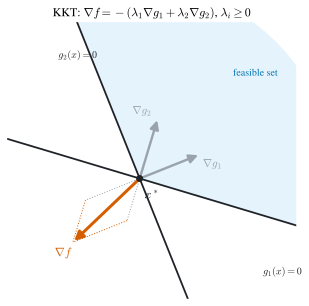
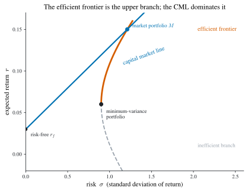

1 Static Optimization
Dynamic optimization is, at bottom, static optimization carried out over an infinite-dimensional choice space — a whole path rather than a single point. Every later chapter therefore leans on the finite-dimensional theory assembled here: the first-order conditions of the calculus of variations are an Euler equation because an interior optimum has zero gradient (Section 1.2); the costate of optimal control is a Lagrange multiplier on the law of motion (Section 1.3); the value function \(V\) of dynamic programming inherits its smoothness and its envelope derivative from Berge’s maximum theorem (Section 1.1) and the envelope theorem (Section 1.2.2). This chapter develops that machinery from scratch and to research-grade rigor, deriving every result rather than asserting it.
The general static optimization problem is
\[ \max_{x}\; f(x)\qquad\text{subject to}\qquad x\in X, \tag{1.1}\]
where \(f:\mathbb{R}^n\to\mathbb{R}\) is the objective and \(X\subseteq\mathbb{R}^n\) is the feasible set — the set of admissible decisions. The constraint \(x\in X\) is usually presented through inequality constraints \(g(x)\ge 0\) (the non-strict kind), equality constraints \(h(x)=0\), or a mix of the two; when \(X=\mathbb{R}^n\) the problem is unconstrained. Following the naming conventions of the course, we call Equation 1.1 a convex program when \(f\) is concave and \(X\) convex, a linear program when \(f\) and the constraints are all linear, and a quadratic program when \(f\) is quadratic and the constraints are linear.
A point \(x_0\in X\) is a (global) solution, or global maximizer, if \(f(x)\le f(x_0)\) for all \(x\in X\); it is a local maximizer if the same holds only for \(x\) in some neighbourhood \(O_\delta(x_0)\). Throughout we phrase the theory for maximization; a minimization is handled by maximizing \(-f\), and we flag the sign reversals where they bite.
Four questions organize the chapter, and the whole book repeats them in richer settings:
- Existence — does a solution exist at all? (Section 1.1, via Weierstrass.)
- Necessity — what must a solution satisfy? (FOC/SOC unconstrained; KKT constrained.)
- Sufficiency — when do these conditions guarantee optimality? (Concavity.)
- Sensitivity — how does the optimum move with the data? (Comparative statics and the envelope theorem.)
We close with duality and a suite of economic applications, from cake-eating to the Markowitz frontier.
1.1 Preliminaries
Optimization theory rests on four pillars from real analysis: the algebra of definite matrices (which classifies critical points), the topology of compact sets (which delivers existence), the geometry of convex sets (which underlies the multiplier theorems through separation), and the calculus of convex functions (which converts necessary conditions into sufficient ones). We treat each in turn, proving the results the rest of the chapter consumes.
Definite matrices
A symmetric matrix encodes a quadratic form, and the sign of that form decides whether a critical point is a max, a min, or a saddle. We need a usable test.
Definition 1.1 (Definite and semidefinite matrices) A symmetric \(n\times n\) matrix \(A\) is positive semidefinite if \(\alpha^\top A\,\alpha\ge 0\) for every \(\alpha\in\mathbb{R}^n\), and positive definite if \(\alpha^\top A\,\alpha>0\) for every \(\alpha\ne 0\). It is negative (semi)definite if \(-A\) is positive (semi)definite, and indefinite if \(\alpha^\top A\,\alpha\) takes both signs.
Checking the definition directly is impossible — there are infinitely many \(\alpha\). The leading-principal-minor test reduces it to finitely many determinants. Write \(A_k\) for the \(k\)-th leading principal submatrix (the top-left \(k\times k\) block) and \(D_k=\det A_k\) for its leading principal minor.
Theorem 1.1 (Leading-principal-minor test) For a symmetric \(A\):
- \(A\) is positive definite \(\iff\) all leading principal minors are positive, \(D_k>0\) for \(k=1,\dots,n\);
- \(A\) is negative definite \(\iff\) the leading principal minors alternate in sign starting negative, \((-1)^k D_k>0\) for \(k=1,\dots,n\);
- \(A\) is positive semidefinite \(\iff\) all principal minors (not only the leading ones) are \(\ge 0\);
- \(A\) is negative semidefinite \(\iff\) every principal minor of order \(k\) has sign \((-1)^k\) or is zero.
Leading is not enough for the semidefinite case. For definiteness the leading minors suffice, but semidefiniteness requires all principal minors. The matrix \(\bigl(\begin{smallmatrix}0&0\\0&-1\end{smallmatrix}\bigr)\) has leading minors \(D_1=0,\ D_2=0\) yet is negative semidefinite, while \(\bigl(\begin{smallmatrix}0&0\\0&1\end{smallmatrix}\bigr)\) has the same leading minors and is positive semidefinite — only the full set of principal minors distinguishes them.
Proof. We prove (1); the rest follow by symmetry and a limiting argument. Diagonalize \(A=Q^\top\Lambda Q\) with \(Q\) orthogonal and \(\Lambda=\operatorname{diag}(\lambda_1,\dots,\lambda_n)\). Then \(\alpha^\top A\alpha=\sum_i\lambda_i (Q\alpha)_i^2\), which is positive for all \(\alpha\ne0\) iff every eigenvalue \(\lambda_i>0\); so positive definiteness is equivalent to all eigenvalues being positive, and \(\det A=\prod_i\lambda_i>0\) in that case.
For the minors, argue by induction on \(n\). If \(A\) is positive definite then so is every leading block \(A_k\) (apply the form to vectors supported on the first \(k\) coordinates), hence \(D_k=\det A_k>0\). Conversely suppose \(D_1,\dots,D_n>0\). By induction \(A_{n-1}\) is positive definite, so it has positive eigenvalues; performing symmetric Gaussian elimination (an \(LDL^\top\) factorization, which exists because every leading block is invertible) writes \(A=L\,D\,L^\top\) with \(L\) unit lower triangular and \(D=\operatorname{diag}(d_1,\dots,d_n)\). The leading minors satisfy \(D_k=d_1\cdots d_k\), so \(d_k=D_k/D_{k-1}>0\) for all \(k\) (with \(D_0:=1\)); hence \(D\) is positive definite and so is \(A=L D L^\top\), since \(\alpha^\top A\alpha=(L^\top\alpha)^\top D(L^\top\alpha)>0\) for \(\alpha\ne0\). \(\;\blacksquare\)
Example 1.1 (The \(2\times 2\) case) For \(A=\bigl(\begin{smallmatrix}a&c\\c&d\end{smallmatrix}\bigr)\) the test reads: \(A\) is negative definite iff \(a<0\) and \(ad-c^2>0\), and negative semidefinite iff \(a\le0\), \(d\le0\), and \(ad-c^2\ge0\). The semidefinite test needs \(d\le0\) as a separate condition because \(d\) is itself a (non-leading) principal minor — checking only \(a\le0\) and the determinant would wrongly admit \(\bigl(\begin{smallmatrix}0&0\\0&1\end{smallmatrix}\bigr)\), which has \(a\le0\) and \(\det\ge0\) yet is not negative semidefinite, showing why \(d\le 0\) cannot be dropped.
Compact sets and existence
For points \(x,y\in\mathbb{R}^n\) write \(\|x-y\|=\bigl(\sum_{k=1}^n (x_k-y_k)^2\bigr)^{1/2}\) for the Euclidean distance, and \(O_\delta(x)=\{y:\|y-x\|<\delta\}\) for the open ball of radius \(\delta>0\). A point \(x\) is interior to \(A\) if \(O_\delta(x)\subseteq A\) for some \(\delta>0\); \(A\) is open if all its points are interior; \(x\) is a limit point of \(A\) if some sequence in \(A\) converges to \(x\); and \(A\) is closed if it contains all its limit points. Open and closed are complementary: \(A\) is open iff \(A^c=\mathbb{R}^n\setminus A\) is closed.
Definition 1.2 (Compact set) \(A\subseteq\mathbb{R}^n\) is compact if every sequence in \(A\) has a subsequence converging to a point of \(A\).
In \(\mathbb{R}^n\) this sequential definition coincides with the more familiar one through the Heine–Borel theorem.
Theorem 1.2 (Heine–Borel) A set \(A\subseteq\mathbb{R}^n\) is compact if and only if it is closed and bounded.
Proof. (\(\Rightarrow\)) If \(A\) is unbounded, pick \(x_n\in A\) with \(\|x_n\|>n\); no subsequence can converge (a convergent sequence is bounded), so \(A\) is not compact. If \(A\) is not closed, some limit point \(x\notin A\) is the limit of a sequence in \(A\); every subsequence also converges to \(x\notin A\), so again compactness fails.
(\(\Leftarrow\)) Let \(A\) be closed and bounded and \((x_n)\subseteq A\). Boundedness confines the first coordinates to a bounded interval, so by Bolzano–Weierstrass a subsequence has convergent first coordinate; passing to a further subsequence makes the second coordinate converge too, and after \(n\) such extractions we obtain a subsequence \(x_{n_k}\to x\) in every coordinate. Since \(A\) is closed, \(x\in A\). \(\;\blacksquare\)
Compactness buys existence — the single most important “free” fact in optimization.
Theorem 1.3 (Weierstrass extreme-value theorem) A continuous function \(f\) on a nonempty compact set \(A\subseteq\mathbb{R}^n\) attains its maximum: there exists \(x^\ast\in A\) with \(f(x)\le f(x^\ast)\) for all \(x\in A\).
Proof. Let \(M=\sup_{x\in A}f(x)\in(-\infty,+\infty]\) and choose a maximizing sequence \(x_n\in A\) with \(f(x_n)\to M\). By compactness a subsequence \(x_{n_k}\to x^\ast\in A\). Continuity gives \(f(x^\ast)=\lim_k f(x_{n_k})=M\); in particular \(M<\infty\), and \(x^\ast\) attains it. \(\;\blacksquare\)
Existence can fail if either hypothesis is dropped: \(f(x)=x\) on the open interval \((0,1)\) is continuous but has no maximum (the domain is not closed), and \(f(x)=x\) on \([0,\infty)\) has none (unbounded). Weierstrass is the workhorse behind every later existence claim, including the continuity of value functions in Theorem 1.7 below.
Convex sets and separation
Definition 1.3 (Convex set) \(A\subseteq\mathbb{R}^n\) is convex if \(\alpha x+(1-\alpha)y\in A\) whenever \(x,y\in A\) and \(\alpha\in(0,1)\) — the segment between any two of its points stays inside it.
The geometric fact that underlies every Lagrange-multiplier theorem is that two disjoint convex sets can be separated by a hyperplane.
Theorem 1.4 (Separating-hyperplane theorem) If \(A,B\subseteq\mathbb{R}^n\) are disjoint nonempty convex sets, there is a nonzero \(\alpha\in\mathbb{R}^n\) with \[ \alpha^\top x\;\ge\;\alpha^\top y\qquad\text{for all } x\in A,\ y\in B . \tag{1.2}\] If in addition \(A\) and \(B\) are closed and at least one is bounded, the inequality can be made strict.
Proof. We prove the basic case in which \(B=\{b\}\) is a single point outside a closed convex set \(A\); the general statement follows by applying it to the (convex) difference set \(A-B\) and the origin.
Because \(A\) is closed and nonempty, the distance \(\inf_{x\in A}\|x-b\|\) is attained — restrict to a closed ball around \(b\) meeting \(A\), which is compact, and apply Theorem 1.3 to the continuous map \(x\mapsto-\|x-b\|\). Call the nearest point \(p\in A\) and set \(\alpha=p-b\ne 0\). For any \(x\in A\) and \(t\in(0,1]\), convexity gives \(p+t(x-p)\in A\), so \[ \|p-b\|^2\le\|p+t(x-p)-b\|^2=\|p-b\|^2+2t\,\alpha^\top(x-p)+t^2\|x-p\|^2 . \] Dividing by \(t\) and letting \(t\downarrow 0\) yields \(\alpha^\top(x-p)\ge0\), i.e. \(\alpha^\top x\ge\alpha^\top p\) for all \(x\in A\). Meanwhile \(\alpha^\top p-\alpha^\top b=\|\alpha\|^2>0\), so \(\alpha^\top x\ge\alpha^\top p>\alpha^\top b\), which both separates and (strictly) does so. \(\;\blacksquare\)
A finite-dimensional avatar of separation is Farkas’ lemma, the exact algebraic tool we need to prove the KKT conditions in Section 1.3. It is a theorem of the alternative: of two systems, exactly one is solvable.
Lemma 1.1 (Farkas’ lemma) Let \(a_1,\dots,a_n,\beta\in\mathbb{R}^m\) (here \(\beta\) is the target vector, not the discount factor of notation.qmd). Then exactly one of the following holds:
- there exists \(x\in\mathbb{R}^m\) with \(a_k^\top x\ge 0\) for all \(k\) and \(\beta^\top x<0\); or
- there exist non-negative scalars \(p_1,\dots,p_n\ge 0\) with \(\beta=\sum_{k=1}^n p_k a_k\).
Proof. The two cannot both hold: if (2) holds and \(a_k^\top x\ge0\) for all \(k\), then \(\beta^\top x=\sum_k p_k\,a_k^\top x\ge0\), contradicting \(\beta^\top x<0\).
Suppose (2) fails. The set \(C=\{\sum_k p_k a_k:p_k\ge0\}\) is a closed convex cone (a finitely generated cone is closed) and, by assumption, \(\beta\notin C\). Since \(\beta\notin C\) and \(C\) is closed and convex, the separation of Theorem 1.4 yields a strict separator \(x\) with \(x^\top\beta<\inf_{c\in C}x^\top c\). Since \(0\in C\) the infimum is \(\le0\), giving \(x^\top\beta<0\). And since \(C\) is a cone, \(x^\top c\) is bounded below over \(C\) only if \(x^\top c\ge0\) for every \(c\in C\) (otherwise scaling \(c\) by \(t\to\infty\) sends it to \(-\infty\)); in particular \(x^\top a_k\ge0\) for each generator. This is exactly (1). \(\;\blacksquare\)
Convex and concave functions
For an \(n\)-variable function \(f\) we write the gradient and Hessian as \[ \nabla f(x)=\Bigl(\tfrac{\partial f}{\partial x_i}\Bigr)_{i},\qquad \nabla^2 f(x)=\Bigl(\tfrac{\partial^2 f}{\partial x_i\partial x_j}\Bigr)_{i,j}. \]
Definition 1.4 (Convex, concave, quasiconcave) A function \(f\) on a convex set \(A\) is convex if for all \(x,y\in A\) and \(\theta\in(0,1)\) \[ f\bigl(\theta x+(1-\theta)y\bigr)\le\theta f(x)+(1-\theta)f(y), \tag{1.3}\] and concave if \(-f\) is convex (the inequality reverses). It is strictly convex/concave when the inequality is strict for \(x\ne y\). It is quasiconcave if \(f(\theta x+(1-\theta)y)\ge\min\{f(x),f(y)\}\), equivalently if every upper level set \(\{x:f(x)\ge c\}\) is convex; quasiconvex is the dual notion.
Inequality Equation 1.3 is Jensen’s inequality in its two-point form; iterating it gives \(f(\sum_i\theta_i x_i)\le\sum_i\theta_i f(x_i)\) for any convex weights \(\theta_i\ge0\), \(\sum_i\theta_i=1\). Concavity is the property that makes a stationary point a global maximum, and quasiconcavity — strictly weaker — is what guarantees a convex (hence connected) solution set. The two derivative characterizations below are used constantly.
Theorem 1.5 (First-order characterization) If \(f\) is differentiable on a convex set \(A\), then \(f\) is concave if and only if \[ f(y)-f(x)\le\nabla f(x)^\top(y-x)\qquad\text{for all }x,y\in A, \tag{1.4}\] with strict inequality (for \(x\ne y\)) iff \(f\) is strictly concave. The tangent plane lies above the graph.
Proof. We prove the convex version (\(f\) convex \(\iff\) tangent below graph); negate for concavity.
(\(\Rightarrow\)) Let \(f\) be convex. For \(\theta\in(0,1)\), Equation 1.3 gives \(f(x+\theta(y-x))\le f(x)+\theta\bigl(f(y)-f(x)\bigr)\), hence \[ \frac{f(x+\theta(y-x))-f(x)}{\theta}\le f(y)-f(x). \] Letting \(\theta\downarrow0\), the left side tends to the directional derivative \(\nabla f(x)^\top(y-x)\), giving \(\nabla f(x)^\top(y-x)\le f(y)-f(x)\).
(\(\Leftarrow\)) Suppose the tangent inequality holds. Fix \(x,y\), set \(z=\theta x+(1-\theta)y\), and apply it twice, from \(z\) to \(x\) and from \(z\) to \(y\): \[ f(x)\ge f(z)+\nabla f(z)^\top(x-z),\qquad f(y)\ge f(z)+\nabla f(z)^\top(y-z). \] Multiply the first by \(\theta\), the second by \(1-\theta\), and add: the gradient terms cancel because \(\theta(x-z)+(1-\theta)(y-z)=0\), leaving \(\theta f(x)+(1-\theta)f(y)\ge f(z)\) — convexity. \(\;\blacksquare\)
Theorem 1.6 (Second-order characterization) If \(f\) is twice differentiable on an open convex set, then \(f\) is concave if and only if the Hessian \(\nabla^2 f(x)\) is negative semidefinite at every \(x\). If \(\nabla^2 f(x)\) is negative definite everywhere, \(f\) is strictly concave (the converse is false).
Proof. Again prove the convex version (\(\nabla^2 f\succeq0\)). Fix \(x\) and a direction \(v\) and set \(\phi(t)=f(x+tv)\), so \(\phi''(t)=v^\top\nabla^2 f(x+tv)\,v\). By the first-order characterization Theorem 1.5, \(f\) is convex iff \(\phi\) is convex on every line, and a \(C^2\) function of one variable is convex iff \(\phi''\ge0\). Thus \(f\) convex \(\iff v^\top\nabla^2 f\,v\ge0\) for all \(x,v\), i.e. \(\nabla^2 f\succeq0\). Strict definiteness gives \(\phi''>0\), hence strict convexity; the converse fails since \(f(x)=x^4\) is strictly convex with \(f''(0)=0\). \(\;\blacksquare\)
Correspondences and the maximum theorem
A constraint set that moves with a parameter is a correspondence (set-valued map); the feasible-action map \(\Gamma_t(x)\) of dynamic programming is the leading example. Write \(2^Y=\{B:B\subseteq Y\}\) for the power set of \(Y\). A correspondence \(\Gamma:X\to 2^Y\) assigns to each \(x\in X\) a subset \(\Gamma(x)\subseteq Y\); its graph is \(\mathrm{Gr}(\Gamma)=\{(x,y):y\in\Gamma(x)\}\). It is compact-valued (convex-valued, closed-valued) if each \(\Gamma(x)\) is compact (convex, closed).
Definition 1.5 (Upper and lower hemicontinuity) \(\Gamma\) is upper hemicontinuous (uhc) at \(x\) if for every open \(A\supseteq\Gamma(x)\) there is \(\delta>0\) with \(\Gamma(y)\subseteq A\) for all \(y\in O_\delta(x)\); it is lower hemicontinuous (lhc) at \(x\) if for every open \(A\) meeting \(\Gamma(x)\) there is \(\delta>0\) with \(\Gamma(y)\cap A\neq\varnothing\) for all \(y\in O_\delta(x)\). It is continuous if both.
Upper hemicontinuity forbids the set from “exploding” outward in the limit; lower hemicontinuity forbids it from “imploding”. A single-valued correspondence is continuous in this sense exactly when it is a continuous function. The theorem we need — the foundation of comparative statics for constrained problems and of the smoothness of value functions later — is Berge’s.
Theorem 1.7 (Berge’s maximum theorem) Let \(\Gamma:X\to 2^Y\) be a continuous, compact-valued correspondence and \(f:X\times Y\to\mathbb{R}\) continuous. Define the value function and the argmax correspondence \[ V(x)=\max_{y\in\Gamma(x)} f(x,y),\qquad \Lambda(x)=\operatorname*{arg\,max}_{y\in\Gamma(x)} f(x,y). \] Then \(V\) is continuous on \(X\) and \(\Lambda\) is nonempty, compact-valued, and upper hemicontinuous. If moreover \(\Gamma\) is convex-valued and \(f\) is strictly concave in \(y\), then \(\Lambda\) is single-valued — a continuous function.
Idea of proof. Nonemptiness of \(\Lambda(x)\) is Weierstrass (Theorem 1.3) applied on the compact set \(\Gamma(x)\). Continuity of \(V\) splits into two inequalities. Lower hemicontinuity of \(\Gamma\) lets one track an optimal \(y^\ast\in\Lambda(x)\) by nearby feasible points as \(x\) moves, giving \(\liminf V\ge V(x)\); upper hemicontinuity plus compactness keeps optimizers from escaping, giving \(\limsup V\le V(x)\). Upper hemicontinuity of \(\Lambda\) follows from a closed-graph argument: if \(y_n\in\Lambda(x_n)\), \(x_n\to x\), \(y_n\to y\), then \(y\in\Gamma(x)\) (uhc) and \(f(x,y)=\lim f(x_n,y_n)=\lim V(x_n)=V(x)\) (continuity of \(f\) and \(V\)), so \(y\in\Lambda(x)\). Strict concavity makes \(\Lambda(x)\) a singleton (a strictly concave function has a unique maximizer on a convex set), and a single-valued uhc correspondence is a continuous function. \(\;\blacksquare\)
We will invoke Theorem 1.7 whenever we need a value function to be continuous and an optimal policy to vary continuously — it is the silent partner of every comparative-statics statement in the book.
1.2 Unconstrained optimization
Take \(X=\mathbb{R}^n\), so the problem is \(\max_x f(x)\) with \(f\) twice continuously differentiable. The analysis is the multivariate version of the one-dimensional rule “set the derivative to zero and check the second derivative”.
First- and second-order conditions
Theorem 1.8 (Necessary conditions (FOC and SOC)) If \(x^\ast\) is a local maximizer of \(f\), then \[ \nabla f(x^\ast)=0\qquad\text{and}\qquad \nabla^2 f(x^\ast)\ \text{is negative semidefinite}. \tag{1.5}\]
Proof. Fix a direction \(v\in\mathbb{R}^n\) and set \(\phi(t)=f(x^\ast+tv)\). Since \(x^\ast\) is a local maximizer, \(\phi\) has a local maximum at \(t=0\), so \(\phi'(0)=0\) and \(\phi''(0)\le0\). By the chain rule \(\phi'(0)=\nabla f(x^\ast)^\top v\) and \(\phi''(0)=v^\top\nabla^2 f(x^\ast)\,v\). The first vanishing for every \(v\) forces \(\nabla f(x^\ast)=0\); the second being \(\le0\) for every \(v\) is precisely negative semidefiniteness of \(\nabla^2 f(x^\ast)\). \(\;\blacksquare\)
A point with \(\nabla f=0\) is a stationary (or critical) point; like a stationary point in one variable it may be a maximum, a minimum, or a saddle. To certify a maximum we strengthen the second-order condition.
Theorem 1.9 (Sufficient conditions) If \(\nabla f(x^\ast)=0\) and \(\nabla^2 f(x^\ast)\) is negative definite, then \(x^\ast\) is a strict local maximizer. If \(\nabla f(x^\ast)=0\) and \(f\) is concave on \(\mathbb{R}^n\), then \(x^\ast\) is a global maximizer.
Proof. Local part. By Taylor’s theorem with the gradient zero, \(f(x^\ast+v)=f(x^\ast)+\tfrac12 v^\top\nabla^2 f(x^\ast)\,v+o(\|v\|^2)\). Negative definiteness gives a constant \(c>0\) with \(v^\top\nabla^2 f(x^\ast)v\le-c\|v\|^2\), so \(f(x^\ast+v)<f(x^\ast)\) for all small \(v\ne 0\).
Global part. By the first-order characterization Theorem 1.5, concavity gives the supporting inequality \(f(y)\le f(x^\ast)+\nabla f(x^\ast)^\top(y-x^\ast)=f(x^\ast)\) for every \(y\), since \(\nabla f(x^\ast)=0\). Hence \(x^\ast\) is a global maximizer. \(\;\blacksquare\)
Putting the two together: for a concave \(f\), the single equation \(\nabla f(x^\ast)=0\) is both necessary and sufficient for global optimality. This is the cleanest theorem in the subject and the reason economists prize concavity.
Minimization. For \(\min f\) the signs flip: a local minimizer has \(\nabla f=0\) and \(\nabla^2 f\succeq0\) (positive semidefinite), and \(\nabla^2 f\succ0\) or convexity certifies the minimum. We will use this freely, e.g. for variance minimization in the Markowitz problem (Section 1.6.5).
The envelope theorem
How does the optimal value respond to a parameter? Consider a parametrized unconstrained problem \[ V(\theta)=\max_x f(x,\theta), \tag{1.6}\] with optimizer \(x(\theta)\), so \(V(\theta)=f(x(\theta),\theta)\). The naive total derivative would carry an \(f_x\,x'(\theta)\) term measuring how the choice moves; the envelope theorem says that term vanishes, because at an interior optimum the choice is already optimal.
Theorem 1.10 (Envelope theorem (unconstrained)) If \(x(\theta)\) is an interior maximizer of Equation 1.6 and \(f\), \(x(\cdot)\) are differentiable, then \[ V'(\theta)=f_\theta\bigl(x(\theta),\theta\bigr), \tag{1.7}\] the partial of \(f\) with respect to \(\theta\) evaluated at the optimum — holding the choice fixed.
Proof. Differentiate \(V(\theta)=f(x(\theta),\theta)\) by the chain rule: \[ V'(\theta)=f_x\bigl(x(\theta),\theta\bigr)\,x'(\theta)+f_\theta\bigl(x(\theta),\theta\bigr). \] The first-order condition Equation 1.5 at the interior optimum gives \(f_x(x(\theta),\theta)=0\), killing the first term and leaving Equation 1.7. \(\;\blacksquare\)
If in addition \(f_{xx}(x(\theta),\theta)\) is negative definite, the implicit-function theorem applied to the FOC \(f_x(x(\theta),\theta)=0\) yields the comparative-statics formula \[ x'(\theta)=-\bigl(f_{xx}\bigr)^{-1} f_{x\theta}\Big|_{(x(\theta),\theta)}, \tag{1.8}\] which we generalize in Section 1.4.
Example 1.2 (A two-line envelope check) Let \(g(x,\theta)=x^2-2\theta x\) and consider \(\min_x g\). Since \(g_{xx}=2>0\), \(g\) is strictly convex in \(x\), so the FOC \(g_x=2x-2\theta=0\) is sufficient and gives \(x(\theta)=\theta\), hence \(x'(\theta)=1\). The value is \(V(\theta)=\min_x g=g(\theta,\theta)=-\theta^2\), and indeed the envelope theorem (in its minimization form) predicts \(V'(\theta)=g_\theta(x(\theta),\theta)=-2x(\theta)=-2\theta\), matching \(\frac{\mathrm d}{\mathrm d\theta}(-\theta^2)=-2\theta\) directly. \(\;\blacksquare\)
1.3 Constrained optimization
Now restore the constraints. The general constrained problem is
\[ \max_x\; f(x)\qquad\text{subject to}\qquad g(x)\ge 0,\quad h(x)=0, \tag{1.9}\]
with \(f:\mathbb{R}^n\to\mathbb{R}\), \(g:\mathbb{R}^n\to\mathbb{R}^m\), \(h:\mathbb{R}^n\to\mathbb{R}^k\) all differentiable. The feasible set is \(X=\{x:g(x)\ge0,\ h(x)=0\}\). Equality constraints specialize to the Lagrange case (\(m=0\)); inequality constraints are the genuinely new ingredient, and they introduce a sign — the complementary slackness that is the heart of the KKT theory.
Active constraints and the Lagrangian
For a feasible \(x\), an inequality constraint \(g_i(x)\ge0\) is active (or binding) if \(g_i(x)=0\) and inactive (or slack) if \(g_i(x)>0\). Equality constraints are active at every feasible point by definition. The active set at \(x\) is \[ I(x)=\{i:g_i(x)=0\}. \tag{1.10}\] Only the active constraints can constrain a local move: an inactive \(g_i\) holds with strict inequality, so it continues to hold under small perturbations and may be dropped from local analysis. We assemble the data into the Lagrangian (script-\(\mathcal{L}\)) \[ \mathcal{L}(x,\lambda,\mu)=f(x)+\lambda^\top g(x)+\mu^\top h(x), \tag{1.11}\] with KKT multiplier \(\lambda\in\mathbb{R}^m\) on the inequalities and equality multiplier \(\mu\in\mathbb{R}^k\) on the equalities.
The Fritz–John conditions
Without any regularity assumption on the constraints, the cleanest necessary condition carries an extra multiplier \(\lambda_0\ge0\) on the objective — the Fritz–John form. It says the gradients of objective and active constraints are linearly dependent, but allows the objective’s own weight to be zero in degenerate cases.
Theorem 1.11 (Fritz–John conditions) If \(x^\ast\) solves Equation 1.9, there exist multipliers \(\lambda_0\ge0\), \(\lambda\in\mathbb{R}^m\), \(\mu\in\mathbb{R}^k\), not all zero, such that \[ \nabla_x\mathcal{L}_0(x^\ast,\lambda_0,\lambda,\mu) =\lambda_0\nabla f(x^\ast)+\sum_{i=1}^m\lambda_i\nabla g_i(x^\ast)+\sum_{j=1}^k\mu_j\nabla h_j(x^\ast)=0, \tag{1.12}\] \[ \lambda\ge0,\qquad g(x^\ast)\ge0,\qquad \lambda\odot g(x^\ast)=0,\qquad h(x^\ast)=0, \tag{1.13}\] where \(\mathcal{L}_0=\lambda_0 f+\lambda^\top g+\mu^\top h\) and \(\odot\) is the componentwise (Hadamard) product, so \(\lambda\odot g(x^\ast)=0\) means \(\lambda_i g_i(x^\ast)=0\) for every \(i\).
Proof. Write \(I=I(x^\ast)\) for the active inequalities and assemble the gradients at \(x^\ast\) of the objective and the active constraints. We claim the system \[ \nabla f(x^\ast)^\top d>0,\quad \nabla g_i(x^\ast)^\top d>0\ (i\in I),\quad \nabla h_j(x^\ast)^\top d=0\ (\forall j) \tag{1.14}\] has no solution \(d\in\mathbb{R}^n\). If it had one, then for small \(t>0\) the perturbation \(x^\ast+t d\) would (to first order) strictly increase \(f\), keep each active \(g_i\) non-negative, and respect the equalities — and a standard implicit-function correction along the equality manifold turns this first-order feasibility into genuine feasibility — contradicting optimality of \(x^\ast\).
Infeasibility of Equation 1.14 is exactly a theorem-of-the-alternative hypothesis: by a Gordan/ Farkas-type alternative (Lemma 1.1 applied after splitting each equality into two inequalities), there exist scalars \(\lambda_0\ge0\), \(\lambda_i\ge0\) \((i\in I)\), and free \(\mu_j\), not all zero, with \[ \lambda_0\nabla f(x^\ast)+\sum_{i\in I}\lambda_i\nabla g_i(x^\ast)+\sum_j\mu_j\nabla h_j(x^\ast)=0 . \] Setting \(\lambda_i=0\) for the inactive \(i\notin I\) gives Equation 1.12, and these zeros are precisely the complementary-slackness statement \(\lambda\odot g(x^\ast)=0\), since \(g_i(x^\ast)>0\) forces \(\lambda_i=0\) while \(g_i(x^\ast)=0\) allows \(\lambda_i\ge0\). \(\;\blacksquare\)
The blemish of Fritz–John is the case \(\lambda_0=0\): then the conditions involve only the constraints and say nothing about \(f\), so they cannot locate the optimum. The course names this a singular problem (and \(\lambda_0>0\), normalizable to \(\lambda_0=1\), non-singular). Ruling out \(\lambda_0=0\) is exactly what a constraint qualification does.
Constraint qualifications and LICQ
This subsection folds in the course supplement 关于线性独立资质 (“On Linear Independence Qualification”). Its content — the definition of LICQ, the resulting KKT theorem, sufficiency, the corollary, and a fully worked \(\mathbb{R}^2\) example — is reconstructed here in full.
A constraint qualification (CQ) is any condition on the constraints guaranteeing \(\lambda_0>0\) in Theorem 1.11, hence the existence of ordinary (non-singular) multipliers. The simplest and most-used is LICQ.
Definition 1.6 (Linear independence constraint qualification (LICQ)) The constraints of Equation 1.9 satisfy LICQ at a feasible point \(x\) if the gradients of all active constraints there, \[ \bigl\{\nabla g_i(x):i\in I(x)\bigr\}\ \cup\ \bigl\{\nabla h_j(x):j=1,\dots,k\bigr\}, \] are linearly independent. (The empty case — no active constraints — counts as satisfying LICQ vacuously.) The constraints satisfy LICQ on the problem if LICQ holds at every feasible point.
Under LICQ the degenerate weight cannot occur, and the Fritz–John conditions sharpen to the celebrated Karush–Kuhn–Tucker conditions with \(\lambda_0=1\).
Theorem 1.12 (Karush–Kuhn–Tucker conditions) If \(x^\ast\) solves Equation 1.9 and LICQ holds at \(x^\ast\), there exist \(\lambda\in\mathbb{R}^m\), \(\mu\in\mathbb{R}^k\) with \[ \nabla_x\mathcal{L}(x^\ast,\lambda,\mu)=\nabla f(x^\ast)+\sum_{i=1}^m\lambda_i\nabla g_i(x^\ast) +\sum_{j=1}^k\mu_j\nabla h_j(x^\ast)=0, \tag{1.15}\] \[ \lambda\ge0,\qquad g(x^\ast)\ge0,\qquad \lambda\odot g(x^\ast)=0,\qquad h(x^\ast)=0, \tag{1.16}\] with \(\mathcal{L}\) the Lagrangian Equation 1.11. Here \(\lambda\) is the K–T multiplier and \(\mu\) the Lagrange multiplier.
Proof. Apply Theorem 1.11 to get multipliers \((\lambda_0,\lambda,\mu)\) not all zero with Equation 1.12. Suppose \(\lambda_0=0\). Then \(\sum_{i\in I}\lambda_i\nabla g_i(x^\ast)+\sum_j\mu_j\nabla h_j(x^\ast)=0\) with the active inactive \(\lambda_i\) zero by slackness, so this is a linear dependence among the active gradients with not all coefficients zero (since \((\lambda,\mu)\ne0\) when \(\lambda_0=0\)) — contradicting LICQ. Hence \(\lambda_0>0\); dividing through by \(\lambda_0\) and renaming \(\lambda/\lambda_0\to\lambda\), \(\mu/\lambda_0\to\mu\) gives Equation 1.15 with \(\lambda_0=1\). \(\;\blacksquare\)
Figure 1.1 shows the geometry. Because we maximize \(f\) subject to \(g\ge0\), at the optimum \(\nabla f\) cannot point into the feasible interior, or \(f\) could be increased. The clean statement is that \(\nabla f(x^\ast)\) lies in the cone spanned by the outward normals of the binding constraints: there are non-negative weights \(\lambda_i\ge0\) with \[ \nabla f(x^\ast)=-\sum_{i\in I}\lambda_i\,\nabla g_i(x^\ast),\qquad \lambda_i\ge0, \tag{1.17}\] where the \(\nabla g_i\) are the inward normals of the binding constraints, so \(-\nabla g_i\) are the outward normals. This is exactly the stationarity condition Equation 1.15 with the constraint terms moved to the right-hand side; geometrically \(\nabla f\) lies in the convex cone of the outward normals \(-\nabla g_i\), so \(f\) cannot increase without leaving the feasible set.

Why the sign of \(\lambda\) is non-negative. Suppose only \(g_i\) binds and \(\lambda_i<0\). Moving infinitesimally into the feasible interior along \(d\) with \(\nabla g_i^\top d>0\) keeps feasibility and changes \(f\) by \(\nabla f^\top d=-\lambda_i\nabla g_i^\top d>0\), a strict improvement — contradiction. So \(\lambda_i\ge0\). Complementary slackness \(\lambda_i g_i=0\) then encodes the dichotomy: a slack constraint (\(g_i>0\)) carries no multiplier (\(\lambda_i=0\)) and may be ignored in the Lagrangian, while a binding constraint may carry a positive shadow price.
The sufficiency direction needs no CQ — only concavity.
Theorem 1.13 (KKT sufficiency) Suppose \(f\) and each \(g_i\) are concave and each \(h_j\) is affine (linear plus a constant). If \((x^\ast,\lambda,\mu)\) satisfies the KKT conditions Equation 1.15–Equation 1.16, then \(x^\ast\) solves Equation 1.9.
Proof. Define \(\psi(x)=\mathcal{L}(x,\lambda,\mu)=f(x)+\lambda^\top g(x)+\mu^\top h(x)\). With \(\lambda\ge0\) and \(g_i\) concave, \(\lambda^\top g\) is concave; \(\mu^\top h\) is affine; \(f\) is concave; so \(\psi\) is concave in \(x\), and Equation 1.15 says \(\nabla_x\psi(x^\ast)=0\). By Theorem 1.9, \(x^\ast\) globally maximizes \(\psi\) over \(\mathbb{R}^n\): \[ f(x^\ast)+\lambda^\top g(x^\ast)+\mu^\top h(x^\ast)\;\ge\;f(x)+\lambda^\top g(x)+\mu^\top h(x) \quad\text{for all }x . \] At \(x^\ast\), complementary slackness gives \(\lambda^\top g(x^\ast)=0\) and \(h(x^\ast)=0\), so the left side is \(f(x^\ast)\). For any feasible \(x\) (so \(g(x)\ge0\), \(h(x)=0\)) with \(\lambda\ge0\) we have \(\lambda^\top g(x)\ge0\) and \(\mu^\top h(x)=0\), so the right side is \(\ge f(x)\). Hence \(f(x^\ast)\ge f(x)\) for all feasible \(x\). \(\;\blacksquare\)
Corollary 1.1 (Necessary and sufficient under concavity + LICQ) Suppose \(f,g\) are concave, \(h\) affine, and the constraints satisfy LICQ. Then \(x^\ast\) solves Equation 1.9 if and only if there exist \(\lambda\ge0\), \(\mu\) satisfying the KKT conditions Equation 1.15–Equation 1.16.
Proof. Necessity is Theorem 1.12 (LICQ); sufficiency is Theorem 1.13 (concavity). \(\;\blacksquare\)
The concavity hypothesis of Theorem 1.13 can be weakened: it remains valid if \(f\) and \(g\) are merely quasiconcave and \(\nabla f(x^\ast)\ne0\). (Quasiconcavity convexifies the upper level sets, and the nonvanishing gradient supplies the strict supporting direction the concave proof got for free.)
On the proofs. Sufficiency (Theorem 1.13) is elementary, resting only on concavity. Necessity (Theorem 1.11, Theorem 1.12) is the deep part: the classical route runs through theorems of the alternative — Gordan’s, Motzkin’s, or Farkas’ lemma (Lemma 1.1) — which are themselves finite-dimensional separation theorems (Theorem 1.4). This is why Section 1.1 spent effort on convexity and separation: they are the analytic backbone of the multiplier rule.
A worked LICQ check
Example 1.3 (LICQ for the unit-simplex constraints in \(\mathbb{R}^2\)) Consider the three inequality constraints in \(\mathbb{R}^2\) \[ g_1(x,y)=x+y-1\ge0,\qquad g_2(x,y)=x\ge0,\qquad g_3(x,y)=y\ge0, \] with constant gradients \(\nabla g_1=\bigl(\begin{smallmatrix}1\\1\end{smallmatrix}\bigr)\), \(\nabla g_2=\bigl(\begin{smallmatrix}1\\0\end{smallmatrix}\bigr)\), \(\nabla g_3=\bigl(\begin{smallmatrix}0\\1\end{smallmatrix}\bigr)\). We claim LICQ holds at every feasible point.
First, at most two constraints can be active at once: the three equations \(x+y-1=0\), \(x=0\), \(y=0\) have no common solution (the first needs \(x+y=1\), the last two force \(x=y=0\)), so no feasible point activates all three. The active set has size \(0\), \(1\), or \(2\), and we check each.
No active constraint. LICQ holds vacuously.
One active constraint. The single active gradient is one of \(\nabla g_1,\nabla g_2,\nabla g_3\), each a nonzero vector, and a one-vector set is linearly independent. LICQ holds. (Concretely: on the edge \(x+y=1\) with \(x,y>0\) only \(g_1\) binds, with gradient \(\bigl(\begin{smallmatrix}1\\1\end{smallmatrix}\bigr)\ne0\); on the axis \(x=0\), \(y>0\), \(x+y>1\) only \(g_2\) binds; on \(y=0\), \(x>0\), \(x+y>1\) only \(g_3\) binds.)
Two active constraints. Two cases arise (the third pairing \(\{g_2,g_3\}\) is infeasible since it forces \(x=y=0\), where \(g_1=-1<0\)):
- \(g_1,g_2\) active (\(x+y=1\), \(x=0\), so the point \((0,1)\)): gradients \(\bigl(\begin{smallmatrix}1\\1\end{smallmatrix}\bigr)\) and \(\bigl(\begin{smallmatrix}1\\0\end{smallmatrix}\bigr)\) are linearly independent.
- \(g_1,g_3\) active (\(x+y=1\), \(y=0\), the point \((1,0)\)): gradients \(\bigl(\begin{smallmatrix}1\\1\end{smallmatrix}\bigr)\) and \(\bigl(\begin{smallmatrix}0\\1\end{smallmatrix}\bigr)\) are linearly independent.
Every feasible point falls into one of these cases, so LICQ holds on the whole feasible set, and the KKT conditions are necessary for optimality of any program over it. \(\;\blacksquare\)
The companion \(\mathbb{R}^3\) exercise from the supplement appears as Section 1.7, Problem 6.
Worked KKT examples
Example 1.4 (A quadratic program over the simplex) Solve \(\min\,(x^2+y^2)\) subject to \(x+y\ge1\), \(x\ge0\), \(y\ge0\). Rewrite as \(\max\,-(x^2+y^2)\); the objective \(-(x^2+y^2)\) is concave, the constraints are linear, and LICQ holds (Example 1.3), so by Corollary 1.1 the KKT conditions are necessary and sufficient. With \(\mathcal{L}=-(x^2+y^2)+\lambda(x+y-1)+\mu_1 x+\mu_2 y\) the conditions are \[ -2x+\lambda+\mu_1=0,\quad -2y+\lambda+\mu_2=0,\quad x+y\ge1,\ \lambda\ge0,\ \lambda(x+y-1)=0, \] \[ x\ge0,\ \mu_1\ge0,\ \mu_1 x=0,\qquad y\ge0,\ \mu_2\ge0,\ \mu_2 y=0 . \] First, \(\lambda>0\): if \(\lambda=0\) then \(2x=\mu_1\), \(2y=\mu_2\), and \(\mu_1 x=\mu_2 y=0\) force \(x=y=0\), violating \(x+y\ge1\). With \(\lambda>0\), \(2x=\lambda+\mu_1>0\) and \(2y=\lambda+\mu_2>0\), so \(x,y>0\), whence \(\mu_1=\mu_2=0\) by slackness. Then \(x=\lambda/2=y\), and \(\lambda(x+y-1)=0\) with \(\lambda>0\) gives \(x+y=1\). Therefore \(x=y=1/2\), the projection of the origin onto the line \(x+y=1\). \(\;\blacksquare\)
Example 1.5 (When the objective is the wrong curvature) Solve \(\max\,(x^2+y^2)\) subject to \(x+y\le1\), \(x\ge0\), \(y\ge0\). The objective is strictly convex, so Corollary 1.1 does not apply — KKT points are merely candidates. But the feasible set is the compact triangle with vertices \((0,0),(1,0),(0,1)\), and \(f\) is continuous, so Weierstrass (Theorem 1.3) guarantees a maximum; LICQ holds, so the maximizer satisfies KKT. Solving the KKT system (with \(g_1=1-x-y\), multipliers \(\lambda_1,\lambda_2,\lambda_3\)) yields four candidate points \((0,0),(1,0),(0,1),(1/2,1/2)\). Evaluating \(f\): the values are \(0,1,1,1/2\), so the maxima are the two corners \((1,0)\) and \((0,1)\), each with \(f=1\).
The direct method confirms this without multipliers. Interior stationarity \(\nabla f=0\) gives only \((0,0)\), not in the interior of the triangle, so the maximum is on the boundary. On the edge \(x=0,\ y\in[0,1]\), \(f=y^2\) peaks at \((0,1)\); on \(y=0\), at \((1,0)\); on the edge \(x+y=1\), \(f=x^2+(1-x)^2\) peaks at the endpoints \(x=0,1\). Comparing all boundary maxima recovers \((1,0)\) and \((0,1)\). The lesson: when the program is non-convex, enumerate interior critical points and the boundary pieces, then compare values. \(\;\blacksquare\)
1.4 Comparative statics
Comparative statics asks how the optimum \(x(\theta)\) and the optimal value \(V(\theta)\) shift when an exogenous parameter \(\theta\) moves. Two tools answer it: the implicit-function theorem (applied to the FOC/KKT system) for \(x'(\theta)\), and the envelope theorem for \(V'(\theta)\). Because equalities convert to a pair of inequalities, it suffices to treat the inequality- constrained problem \[ \max_x f(x,\theta)\quad\text{s.t.}\quad g(x,\theta)\ge0, \tag{1.18}\] with \(f:\mathbb{R}^{n+1}\to\mathbb{R}\), \(g:\mathbb{R}^{n+1}\to\mathbb{R}^k\). Let \(x(\theta)\) be the solution and \(\lambda(\theta)\ge0\) the associated KKT multiplier; under the standing assumptions (LICQ, strict complementarity, a negative-definite bordered Hessian) both are differentiable in \(\theta\) — a fact whose continuity half is exactly Berge’s theorem (Theorem 1.7).
The constrained envelope theorem
Theorem 1.14 (Envelope theorem (constrained)) For Equation 1.18 with value \(V(\theta)=f(x(\theta),\theta)\) and Lagrangian \(\mathcal{L}(x,\lambda,\theta)=f(x,\theta)+\lambda^\top g(x,\theta)\), \[ V'(\theta)=\mathcal{L}_\theta\bigl(x(\theta),\lambda(\theta),\theta\bigr) =f_\theta\bigl(x(\theta),\theta\bigr)+\lambda(\theta)^\top g_\theta\bigl(x(\theta),\theta\bigr). \tag{1.19}\]
Proof. By complementary slackness \(\lambda(\theta)^\top g(x(\theta),\theta)=0\), so \(V(\theta)=f(x(\theta),\theta)+\lambda(\theta)^\top g(x(\theta),\theta)=\mathcal{L}(x(\theta),\lambda(\theta),\theta)\). Differentiate totally: \[ V'(\theta)=\mathcal{L}_x\,x'(\theta)+\mathcal{L}_\lambda\,\lambda'(\theta)+\mathcal{L}_\theta, \] all evaluated at \((x(\theta),\lambda(\theta),\theta)\). The KKT stationarity \(\mathcal{L}_x=0\) kills the first term. The second is \(\mathcal{L}_\lambda\,\lambda'(\theta)=g(x(\theta),\theta)^\top\lambda'(\theta)\), which vanishes: indeed \(g_i\lambda_i'=0\) component-wise because if \(g_i(x(\theta),\theta)>0\) then \(\lambda_i(\theta)\equiv0\) in a neighbourhood (slackness persists by continuity), so \(\lambda_i'(\theta)=0\); and if \(g_i(x(\theta),\theta)=0\) then the factor \(g_i=0\). Hence \(V'(\theta)=\mathcal{L}_\theta\). \(\;\blacksquare\)
The vanishing of the multiplier-derivative term, \(g(x(\theta),\theta)^\top\lambda'(\theta)=0\), is the constrained analogue of the FOC killing \(f_x x'\) in Theorem 1.10 — both express that we need not track how the solution moves, only how the data enter directly.
Multipliers as shadow prices
The most useful special case is a constraint loosened by the parameter itself. Consider \[ \max_x f(x)\quad\text{s.t.}\quad h(x)\le\theta, \tag{1.20}\] i.e. \(g(x,\theta)=\theta-h(x)\ge0\), with value \(V(\theta)\) and multiplier \(\lambda(\theta)\). The Lagrangian is \(\mathcal{L}=f(x)+\lambda(\theta-h(x))\), so \(\mathcal{L}_\theta=\lambda\), and Theorem 1.14 gives \[ V'(\theta)=\lambda(\theta). \tag{1.21}\] The multiplier is the shadow price of the constraint: it measures the marginal value to the objective of relaxing the constraint by one unit. This single identity is the bridge from the abstract multiplier rule to economics — it reappears below as the marginal utility of wealth, the price of a resource, and (in later chapters) the costate variable of optimal control.
Comparative statics of the choice
When the relevant constraints are non-binding (or absent) the optimum solves \(f_x(x(\theta), \theta)=0\). Differentiating this identity in \(\theta\), \[ f_{xx}\bigl(x(\theta),\theta\bigr)\,x'(\theta)+f_{x\theta}\bigl(x(\theta),\theta\bigr)=0, \] and inverting the (assumed negative-definite, hence nonsingular) Hessian gives the comparative-statics formula already met as Equation 1.8, \[ x'(\theta)=-\bigl(f_{xx}\bigr)^{-1} f_{x\theta}\Big|_{(x(\theta),\theta)}. \tag{1.22}\] For binding constraints one differentiates the full KKT system, including the active \(g_i=0\), and inverts the bordered Hessian — the same algebra, with the constraint gradients bordering the Lagrangian Hessian.
1.5 Duality
Every maximization has a shadow minimization — its dual — whose optimal value bounds, and under good conditions equals, the original (primal) optimum. Duality reorganizes the KKT theory around saddle points of the Lagrangian and is the analytic root of price decentralization in economics and of efficient algorithms in computation.
Weak duality and the duality gap
Abstractly, a problem \(\max_{x\in X}f(x)\) has a dual \(\min_{y\in Y}\phi(y)\) whenever \(f(x)\le\phi(y)\) for all \(x\in X\), \(y\in Y\). The two values then satisfy the weak duality inequality \[ \max_{x\in X} f(x)\;\le\;\min_{y\in Y}\phi(y), \tag{1.23}\] and the nonnegative difference \(\min_{y}\phi(y)-\max_{x}f(x)\) is the duality gap. When the gap is zero one may solve either problem to learn the common optimal value — the basis of much of linear and convex programming.
For the constrained problem \(\max_x f(x)\) s.t. \(g(x)\ge0\) the canonical dual is the Lagrangian dual. Form \(\mathcal{L}(x,\lambda)=f(x)+\lambda^\top g(x)\) with \(\lambda\in\mathbb{R}^m_+\). Then \[ \min_{\lambda\ge0}\mathcal{L}(x,\lambda)= \begin{cases} f(x), & g(x)\ge0,\\ -\infty, & g(x)\not\ge0,\end{cases} \tag{1.24}\] because if some \(g_i(x)<0\) we drive \(\lambda_i\to+\infty\) to send \(\mathcal{L}\to-\infty\), while if \(g(x)\ge0\) the best \(\lambda\ge0\) can do is set \(\lambda^\top g(x)=0\). Hence the primal value equals a max–min, \[ \max_{x:g(x)\ge0} f(x)=\max_x\min_{\lambda\ge0}\mathcal{L}(x,\lambda). \tag{1.25}\] Defining the dual function \(\varphi(\lambda)=\max_x\mathcal{L}(x,\lambda)\), the dual problem is \[ \min_{\lambda\ge0}\varphi(\lambda)=\min_{\lambda\ge0}\max_x\mathcal{L}(x,\lambda). \tag{1.26}\]
Theorem 1.15 (Weak duality) For any primal-feasible \(x\) (so \(g(x)\ge0\)) and any dual-feasible \(\lambda\ge0\), \(f(x)\le\varphi(\lambda)\); consequently \(\max_x f(x)\le\min_{\lambda\ge0}\varphi(\lambda)\).
Proof. With \(g(x)\ge0\) and \(\lambda\ge0\) we have \(\lambda^\top g(x)\ge0\), so \[ f(x)\le f(x)+\lambda^\top g(x)=\mathcal{L}(x,\lambda)\le\max_{x'}\mathcal{L}(x',\lambda)=\varphi(\lambda). \] Taking the max over feasible \(x\) on the left and the min over \(\lambda\ge0\) on the right preserves the inequality. \(\;\blacksquare\)
This is the weak duality theorem: the max–min never exceeds the min–max, \(\max_x\min_\lambda\mathcal{L}\le\min_\lambda\max_x\mathcal{L}\), which holds for any function of two arguments. The question is when equality — strong duality, zero gap — holds.
Saddle points and the three-way equivalence
A point \((x^\ast,\lambda^\ast)\) is a saddle point of \(\mathcal{L}\) if \[ \mathcal{L}(x,\lambda^\ast)\le\mathcal{L}(x^\ast,\lambda^\ast)\le\mathcal{L}(x^\ast,\lambda) \qquad\text{for all }x,\ \lambda\ge0, \tag{1.27}\] i.e. \(x^\ast\) maximizes \(\mathcal{L}(\cdot,\lambda^\ast)\) while \(\lambda^\ast\) minimizes \(\mathcal{L}(x^\ast,\cdot)\). At a saddle point the gap closes: \(\max_x\min_\lambda\mathcal{L}=\mathcal{L}(x^\ast,\lambda^\ast)=\min_\lambda\max_x\mathcal{L}\). The following equivalence ties together optimality, the saddle property, and the KKT conditions.
Theorem 1.16 (Three-way equivalence) For the program \(\max_x f(x)\) s.t. \(g(x)\ge0\) with Lagrangian \(\mathcal{L}=f+\lambda^\top g\), the following are equivalent:
- \(x^\ast\) solves the primal, \(\lambda^\ast\) solves the dual, and the duality gap is zero;
- \((x^\ast,\lambda^\ast)\) is a saddle point of \(\mathcal{L}\);
- \(\mathcal{L}(x^\ast,\lambda^\ast)=\max_x\mathcal{L}(x,\lambda^\ast)\) together with \(g(x^\ast)\ge0\) and \(\lambda^\ast\odot g(x^\ast)=0\) (the KKT slackness).
Proof. (2)\(\Rightarrow\)(3). The left inequality of Equation 1.27 says \(x^\ast\) maximizes \(\mathcal{L}(\cdot,\lambda^\ast)\). The right inequality says \(\lambda^\ast\) minimizes \(\lambda\mapsto f(x^\ast)+\lambda^\top g(x^\ast)\) over \(\lambda\ge0\); a linear function of \(\lambda\ge0\) is minimized at a finite value only if its slope \(g(x^\ast)\ge0\), and the minimizing \(\lambda^\ast\) then makes \(\lambda^\ast{}^\top g(x^\ast)=0\) (put weight only where \(g_i=0\)). This is feasibility plus complementary slackness.
(3)\(\Rightarrow\)(2). Given (3), for any \(\lambda\ge0\), \(\mathcal{L}(x^\ast,\lambda)=f(x^\ast)+\lambda^\top g(x^\ast)\ge f(x^\ast)=\mathcal{L}(x^\ast, \lambda^\ast)\) using \(g(x^\ast)\ge0\), \(\lambda\ge0\), and slackness — the right saddle inequality; the left is the stated maximization. So \((x^\ast,\lambda^\ast)\) is a saddle.
(2)\(\Rightarrow\)(1). At a saddle the gap is zero and the saddle value is the common optimum, so \(x^\ast\) is primal-optimal and \(\lambda^\ast\) dual-optimal: for any feasible \(x\), \(f(x)\le\mathcal{L}(x,\lambda^\ast)\le\mathcal{L}(x^\ast,\lambda^\ast)=f(x^\ast)\) (first step weak duality, last step slackness), and dually \(\varphi(\lambda)\ge\varphi(\lambda^\ast)\).
(1)\(\Rightarrow\)(2). Zero gap means \(f(x^\ast)=\varphi(\lambda^\ast)=\max_x\mathcal{L}(x,\lambda^\ast)\ge\mathcal{L}(x^\ast, \lambda^\ast)=f(x^\ast)+\lambda^\ast{}^\top g(x^\ast)\ge f(x^\ast)\), forcing all to be equalities; hence \(x^\ast\) maximizes \(\mathcal{L}(\cdot,\lambda^\ast)\) and \(\lambda^\ast{}^\top g(x^\ast)=0\), which is (3), hence (2). \(\;\blacksquare\)
When \(f,g\) are concave, \(\mathcal{L}(\cdot,\lambda^\ast)\) is concave in \(x\), so its maximization in condition (3) reduces to the single equation \(\nabla_x\mathcal{L}(x^\ast,\lambda^\ast)=0\) — the KKT stationarity. Thus in the concave case the saddle-point property is equivalent to the KKT conditions, and strong duality (zero gap) holds whenever a KKT point exists. This is the precise sense in which “solve the dual” and “solve the KKT system” are the same.
Linear programming. For \(\max c^\top x\) s.t. \(Ax\le b\), \(x\ge0\) (with \(c,b,A\) entrywise positive), the Lagrangian \(\mathcal{L}(x,y)=c^\top x+y^\top(b-Ax)=b^\top y+x^\top(c-A^\top y)\) is simultaneously the Lagrangian of the dual LP \(\min b^\top y\) s.t. \(A^\top y\ge c\), \(y\ge0\) — with the roles of multiplier and variable exchanged. Strong duality is exact here (the gap is always zero for feasible, bounded LPs), the cornerstone of linear programming.
1.6 Economic examples
The remaining sections apply the apparatus to the canonical problems of microeconomics and finance. Each illustrates the same three moves: write the Lagrangian, read off KKT, and interpret the multiplier as a price.
Cake-eating
A consumer holds \(A\) units of cake to eat at dates \(t=0,1,\dots,n\), with discounted log utility \(\sum_{k=0}^n\beta^k\ln x_k\) for a per-period discount factor \(\beta\in(0,1)\) (the discrete-time factor, written \(\beta\) throughout — see Notation). The problem \[ \max_{x_0,\dots,x_n}\ \sum_{k=0}^n\beta^k\ln x_k\quad\text{s.t.}\quad\sum_{k=0}^n x_k=A \tag{1.28}\] has a strictly concave objective and a linear constraint satisfying LICQ, so KKT is necessary and sufficient (Corollary 1.1). With \(\mathcal{L}=\sum_k\beta^k\ln x_k+\lambda(A-\sum_k x_k)\), stationarity \(\partial\mathcal{L}/\partial x_k=\beta^k/x_k-\lambda=0\) gives \(x_k=\beta^k/\lambda\). Substituting into the budget, \(\sum_k\beta^k/\lambda=A\) fixes \(\lambda=\frac1A\sum_{k=0}^n\beta^k\), so \[ x_k=A\,\frac{\beta^k}{\sum_{j=0}^n\beta^j},\qquad k=0,\dots,n . \tag{1.29}\] Consumption falls geometrically at the discount factor — the consumer front-loads eating because the future is discounted. The multiplier \(\lambda\) is the marginal utility of cake (the shadow price of the budget). With \(n=\infty\) the geometric series converges to \(\sum_j\beta^j=1/(1-\beta)\), giving \(x_k=A(1-\beta)\beta^k\) — the infinite-horizon cake-eating rule (Problem 2).
Marshallian demand, indirect utility, and Roy’s identity
A consumer with strictly concave utility \(U\) over bundles \(x\), wealth \(y\), and price vector \(p\) solves \[ \max_x U(x)\quad\text{s.t.}\quad p^\top x\le y . \tag{1.30}\] The unique solution \(x(p,y)\) is Marshallian (uncompensated) demand, and the value \(V(p,y)=U(x(p,y))\) is the indirect utility function. With Lagrangian \(\mathcal{L}=U(x)+\lambda(y-p^\top x)\) the optimum satisfies \(\mathcal{L}_x=0\) and slackness \(\lambda(y-p^\top x)=0\), and \(V(p,y)=\mathcal{L}(x(p,y),\lambda(p,y))\). By the envelope theorem (Theorem 1.14), differentiating the Lagrangian in the parameters \(p\) and \(y\) directly, \[ V_p=\mathcal{L}_p=-\lambda\,x,\qquad V_y=\mathcal{L}_y=\lambda . \tag{1.31}\] Eliminating \(\lambda\) gives Roy’s identity \[ x(p,y)=-\frac{V_p(p,y)}{V_y(p,y)}, \tag{1.32}\] recovering demand from the indirect utility’s price- and wealth-gradients. Economically, \(\lambda =V_y>0\) is the marginal utility of wealth — the shadow price of the budget constraint, exactly Equation 1.21.
Hicksian demand, the expenditure function, and Shephard’s lemma
The dual consumer problem minimizes the spending needed to reach a utility target \(u\): \[ \min_x p^\top x\quad\text{s.t.}\quad U(x)\ge u . \tag{1.33}\] Its solution \(h(p,u)\) is Hicksian (compensated) demand and the value \(e(p,u)=p^\top h(p,u)\) is the expenditure function. Writing the Lagrangian \(\mathcal{L}=p^\top x+\mu(u-U(x))\) (a minimization, so \(\mu\ge0\)), the envelope theorem in the price \(p\) gives, since only the explicit \(p^\top x\) term depends on \(p\), \[ e_p(p,u)=\mathcal{L}_p=h(p,u). \tag{1.34}\] This is Shephard’s lemma: the price-gradient of the expenditure function is Hicksian demand. It is the cost-minimization mirror of Roy’s identity, and the envelope theorem delivers both with no differentiation of the optimal choice.
The Slutsky equation
Marshallian and Hicksian demand are the primal and dual faces of the same consumer. They coincide when the wealth and utility targets are matched: \(y=e(p,u)\iff u=V(p,y)\), and then \(h(p,u)=x(p,y)\), giving the identity \[ h(p,u)=x\bigl(p,\,e(p,u)\bigr). \tag{1.35}\] Differentiate in \(p\) (matrix form, with \(D_p\) the Jacobian in \(p\) and \(D_y\) the wealth-derivative column): \[ D_p h=D_p x+D_y x\,\cdot(e_p)^\top . \] By Shephard’s lemma \(e_p=h=x\), so substituting \(e_p=x\) and rearranging gives the Slutsky equation \[ D_p x=D_p h-D_y x\cdot x^\top, \tag{1.36}\] or component-wise \[ \frac{\partial x_i}{\partial p_j} =\underbrace{\frac{\partial h_i}{\partial p_j}}_{\text{substitution}} -\underbrace{\frac{\partial x_i}{\partial y}\,x_j}_{\text{income}} . \tag{1.37}\] The price response of demand splits into a substitution effect (the Hicksian, compensated response) and an income effect (the wealth response scaled by the quantity bought). Moreover \(D_p h=D_p(e_p)=D_{pp}e=\nabla^2_p e\): the Slutsky matrix is the Hessian of the expenditure function, hence symmetric and negative semidefinite — compensated demand slopes down, and cross substitution effects are symmetric. This is the deepest comparative-statics result in consumer theory, and it falls out of the envelope theorem and concavity of \(e\).
The Markowitz frontier, two-fund theorem, and CAPM
(Throughout this section \(\beta\) denotes the frontier-portfolio direction vector Equation 1.40 and, later, the CAPM beta Equation 1.42 — not the discount factor reserved for \(\beta\) in notation.qmd and used in this chapter’s cake-eating example.)
Consider a one-period market with \(n\) risky assets, expected-return vector \(\theta\ne\mathbf{1}\), and positive-definite return-covariance matrix \(A\). A portfolio \(x\) (weights summing to one) has expected return \(\theta^\top x\) and return variance \(x^\top A x\). A portfolio is a frontier portfolio if it minimizes variance among all portfolios with its expected return \(r\): \[ \min_x\ x^\top A x\quad\text{s.t.}\quad \theta^\top x=r,\quad \mathbf{1}^\top x=1 . \tag{1.38}\] The objective is strictly convex, the constraints linear and independent (LICQ holds), so KKT is necessary and sufficient. With \(\mathcal{L}=x^\top A x+\lambda(r-\theta^\top x)+\mu(1-\mathbf{1}^\top x)\), stationarity \(\nabla_x\mathcal{L}=2Ax-\lambda\theta-\mu\mathbf{1}=0\) gives (absorbing the \(2\) into \(\lambda,\mu\)) \[ x=\lambda A^{-1}\theta+\mu A^{-1}\mathbf{1}. \tag{1.39}\] Imposing the two constraints yields two linear equations in \((\lambda,\mu)\); solving and substituting back, the frontier portfolio is affine in its target return, \[ x=\alpha+r\,\beta, \tag{1.40}\] where \(\alpha,\beta\in\mathbb{R}^n\) depend only on \(A,\theta\). A portfolio is therefore a frontier portfolio if and only if it can be written in the form Equation 1.40, and it is uniquely pinned down by its expected return \(r\). Substituting Equation 1.39 into the objective shows the minimized variance traces a hyperbola in the \((\sigma,r)\) plane, \[ \frac{\sigma^2}{a^2}-\frac{(r-r_0)^2}{b^2}=1,\qquad \sigma>0, \tag{1.41}\] with \(a,b,r_0\) positive constants of \(A,\theta\). The right branch is the portfolio frontier; its upper half (\(r\ge r_0\)) is the efficient frontier — efficient portfolios both minimize variance for their return and maximize return for their variance. The vertex \((a,r_0)\) is the minimum-variance portfolio, and a frontier portfolio is efficient iff \(r\ge r_0\) (Figure 1.2).
Theorem 1.17 (Two-fund theorem) Any frontier portfolio is a combination of any two distinct frontier portfolios. Conversely every combination of two frontier portfolios is a frontier portfolio.
Proof. By Equation 1.40 each frontier portfolio is \(\alpha+r\beta\). Fix two distinct frontier portfolios \(x_1=\alpha+r_1\beta\), \(x_2=\alpha+r_2\beta\) with \(r_1\ne r_2\). For any target \(r\) solve \(w_1 r_1+w_2 r_2=r\), \(w_1+w_2=1\) (a \(2\times2\) system, nonsingular since \(r_1\ne r_2\)). Then \(w_1 x_1+w_2 x_2=\alpha(w_1+w_2)+(w_1 r_1+w_2 r_2)\beta=\alpha+r\beta=x\), the frontier portfolio of return \(r\). So investing fractions \(w_1,w_2\) in the two “funds” reproduces the whole frontier; the converse is immediate since any \(w_1 x_1+w_2 x_2\) is again affine in its return. \(\;\blacksquare\)

Now add a risk-free asset with return \(r_f<r_0\). The feasible set in \((\sigma,r)\) space becomes the region bounded by the capital market line (CML) — the ray from \((0,r_f)\) tangent to the efficient frontier at a portfolio \(M\) (Figure 1.2). The one-fund theorem holds: every frontier portfolio is a combination of the risk-free asset and the single tangency portfolio \(M\). If all investors are mean-variance optimizers, in equilibrium each holds a mix of \(r_f\) and \(M\), so \(M\) must be the market portfolio (risky assets in proportion to their total values). From the geometry of the CML one derives the Capital Asset Pricing Model: for any portfolio \(x\), \[ r_x-r_f=\beta_x\,(r_m-r_f),\qquad \beta_x=\frac{\operatorname{Cov}(R_x,R_m)}{\operatorname{Var}(R_m)}, \tag{1.42}\] where \(r_x=\mathbb{E}R_x\), \(r_m=\mathbb{E}R_m\). An asset’s risk premium is proportional to its beta, its covariance with the market normalized by market variance; only undiversifiable (market) risk is priced. CAPM converts the portfolio-optimization geometry into a pricing rule for every asset (Dixit 1990; Acemoglu 2009).
Resource shadow pricing
A region has total available water \(x\), allocated across four uses — industry, agriculture, residential, ecological — in amounts \(y_1,\dots,y_4\) generating monetized values \(f_i(y_i)\). The optimal allocation solves \[ \max_{y_1,\dots,y_4}\ \sum_{i=1}^4 f_i(y_i)\quad\text{s.t.}\quad \sum_{i=1}^4 y_i\le x . \tag{1.43}\] With \(\mathcal{L}=\sum_i f_i(y_i)+\lambda(x-\sum_i y_i)\) and value \(V(x)\), the envelope theorem Equation 1.21 gives \[ V'(x)=\frac{\partial\mathcal{L}}{\partial x}=\lambda, \tag{1.44}\] so the multiplier \(\lambda\) is the shadow price of water — its marginal contribution to regional value. Since the \(f_i\) are hard to pin down, one estimates \(V\) directly (at least locally) and reads off \(V'\). If developing one unit of water costs \(c\), net value is \(W(x)=V(x)-cx\), and the optimal development level \(x^\ast\) (with \(V'>0>V''\)) satisfies \[ c=V'(x^\ast)=\lambda(x^\ast). \tag{1.45}\] Under perfect competition the water price \(p\) equals marginal cost, \(p=c=\lambda(x^\ast)\): the market price of the resource equals its shadow price at the optimal development level. If the region’s growth target requires more water than the shadow price justifies, it should import water from lower-cost regions or, failing that, scale back its target — a textbook application of shadow pricing to policy.
1.7 Problems
The following are the chapter’s exercises; worked solutions to a selected, instructive subset follow in Section 1.8.
- Solve \(\max\,(x+y)\) subject to \(x^2+y^2\le1\), \(x\ge0\), \(y\ge0\), and give a geometric interpretation.
- In the cake-eating problem Equation 1.28 with \(n=\infty\), find the optimal consumption path.
- (Advertising model.) A firm spends \(x_1,x_2\) on advertising in two markets, generating sales \(Q_1=\sqrt{x_1}\) and \(Q_2=2\sqrt{x_2}\). With unit product price \(1\) and a fixed total advertising budget \(M\), find the optimal budget split and the value of \(M\).
- (Life-cycle model.) A consumer lives two periods, works only in the first (earning wage \(M\)), consumes \(x\) in period 1, and banks the rest at interest rate \(i\) to consume \(y\) in period 2, with utility \(u(x,y)=u(x)+\beta\,u(y)\), \(\beta\in(0,1)\). Find the optimal first-period consumption when (a) \(u(x)=\sqrt{x}\) and (b) \(u(x)=1-e^{-x}\).
- (Land allocation.) A landowner has 10 mu of land; planting \(x\) mu of trees yields \(2x\) and \(y\) mu of flowers yields \(y^2\). Find the allocation maximizing total revenue, the shadow price of the land, and whether the owner should sell at 1 per mu.
- (LICQ in \(\mathbb{R}^3\); from the supplement.) Determine whether the constraint set \[ x+y=z,\qquad x^2+y^2\ge 2z,\qquad x^3+y^3\ge 3z \] satisfies LICQ at every feasible point.
1.8 Selected solutions
Problem 1
Maximize \(f=x+y\) over the quarter-disk \(\{x^2+y^2\le1,\ x\ge0,\ y\ge0\}\), a compact set, so a maximum exists (Theorem 1.3). The objective is linear (hence concave) and the constraints are concave with LICQ on the relevant boundary, so KKT is sufficient as well as necessary. The unconstrained gradient \(\nabla f=(1,1)\ne0\) never vanishes, so the optimum is on the boundary. The disk constraint \(g_1=1-x^2-y^2\ge0\) must bind (moving outward radially raises \(x+y\) until it does), and on \(x^2+y^2=1\) with \(x,y>0\) the axis constraints are slack, so only \(\lambda_1>0\) is active. Stationarity \(\nabla f=\lambda_1\nabla(x^2+y^2)=\lambda_1(2x,2y)\) forces \(x=y\); combined with \(x^2+y^2=1\) this gives \[ x=y=\tfrac{1}{\sqrt2},\qquad f_{\max}=\sqrt2 . \] Geometrically, the level lines \(x+y=\text{const}\) are lines of slope \(-1\); the largest one meeting the quarter-disk is tangent to the circle at the \(45^\circ\) point \((\tfrac{1}{\sqrt2}, \tfrac{1}{\sqrt2})\), where the line’s normal \((1,1)\) is parallel to the radius — exactly the KKT condition \(\nabla f\parallel\nabla g_1\). \(\;\blacksquare\)
Problem 4 (life-cycle consumption)
The period-2 budget is \(y=(1+i)(M-x)\), so the consumer solves the one-variable problem \[ \max_{0\le x\le M}\ u(x)+\beta\,u\bigl((1+i)(M-x)\bigr). \] The FOC (interior) is \(u'(x)=\beta(1+i)\,u'\bigl((1+i)(M-x)\bigr)\), the Euler equation of two-period consumption: the marginal utility of consuming today equals the discounted, interest- compounded marginal utility of consuming tomorrow.
(a) \(u(x)=\sqrt{x}\), so \(u'(x)=\tfrac12 x^{-1/2}\). The FOC becomes \(x^{-1/2}=\beta(1+i)\bigl[(1+i)(M-x)\bigr]^{-1/2}\). Squaring, \(\frac1x=\frac{\beta^2(1+i)^2}{(1+i)(M-x)}=\frac{\beta^2(1+i)}{M-x}\), hence \(M-x=\beta^2(1+i)\,x\) and \[ x=\frac{M}{1+\beta^2(1+i)} . \] Since \(u\) is strictly concave and the constraint linear, this interior critical point is the global optimum. Higher interest \(i\) or patience \(\beta\) lowers first-period consumption — the consumer saves more when the future is better-rewarded.
(b) \(u(x)=1-e^{-x}\), so \(u'(x)=e^{-x}\). The FOC is \(e^{-x}=\beta(1+i)\,e^{-(1+i)(M-x)}\). Taking logs, \(-x=\ln\!\bigl(\beta(1+i)\bigr)-(1+i)(M-x)\), i.e. \(-x+(1+i)(M-x)=\ln\!\bigl(\beta(1+i)\bigr)\), which rearranges to \[ x=\frac{(1+i)M-\ln\!\bigl(\beta(1+i)\bigr)}{2+i}, \] again the global optimum by strict concavity (clipped to \([0,M]\) if the formula falls outside). \(\;\blacksquare\)
Problem 5 (land allocation and the shadow price)
With \(x\) mu of trees and \(y\) mu of flowers, revenue is \(2x+y^2\) subject to \(x+y\le10\), \(x,y\ge0\). The objective is convex in \(y\), so this is not a concave program and KKT points are only candidates — but the feasible triangle is compact, guaranteeing a maximizer (Theorem 1.3). Because the land constraint will bind (revenue rises in both crops), set \(x=10-y\) and maximize \[ R(y)=2(10-y)+y^2=20-2y+y^2,\qquad y\in[0,10]. \] This parabola opens upward with vertex at \(y=1\) (a minimum), so the maximum is at an endpoint: \(R(0)=20\) versus \(R(10)=20-20+100=100\). Hence the owner plants all 10 mu of flowers, \(y=10\), \(x=0\), for revenue \(100\).
The shadow price of land is the marginal value of an extra mu, \(V'(10)\). With all land in flowers, \(V(L)=L^2\) for \(L\) near \(10\) (the corner solution persists), so \(V'(10)=2L|_{L=10}=20\): an extra mu is worth \(20\). Since the offered purchase price is only \(1\) per mu, far below the shadow price of \(20\), the owner should not sell — the land is worth far more in flower production than the market offers. \(\;\blacksquare\)
Problem 6 (LICQ in \(\mathbb{R}^3\))
Write the constraints as one equality and two inequalities, \[ h(x,y,z)=x+y-z=0,\quad g_1=x^2+y^2-2z\ge0,\quad g_2=x^3+y^3-3z\ge0, \] with gradients \[ \nabla h=\bigl(1,1,-1\bigr),\quad \nabla g_1=\bigl(2x,2y,-2\bigr),\quad \nabla g_2=\bigl(3x^2,3y^2,-3\bigr). \] The equality is active everywhere, so LICQ requires that \(\nabla h\) together with the gradients of whichever inequalities bind be linearly independent.
Both inequalities slack. Only \(\nabla h\ne0\) is active; trivially independent.
One inequality active, say \(g_1=0\). Need \(\nabla h,\nabla g_1\) independent. They are dependent only if \(\nabla g_1=c\,\nabla h\), i.e. \(2x=2y=c\) and \(-2=-c\), forcing \(c=2\) and \(x=y=1\); then \(g_1=0\) gives \(z=1\), which also satisfies \(h\): \(x+y-z=1\). But check \(g_2\) at \((1,1,1)\): \(g_2=1+1-3=-1<0\), infeasible. So the dependence point is not feasible, and LICQ holds wherever \(g_1\) alone binds. The case \(g_2=0\) alone is analogous: \(\nabla g_2=c\nabla h\) needs \(3x^2=3y^2=c\), \(-3=-c\), so \(c=3\), \(x^2=y^2=1\); the feasible-and-active configurations must be checked but generic points are independent.
Both inequalities active, \(g_1=g_2=0\). Need \(\nabla h,\nabla g_1,\nabla g_2\) independent, i.e. \[ \det\begin{pmatrix}1&1&-1\\ 2x&2y&-2\\ 3x^2&3y^2&-3\end{pmatrix}\ne0 . \] Expanding, this determinant is \(6(x-y)(\,\text{a factor}\,)\); it vanishes when \(x=y\). At a point with \(x=y\) on the common boundary \(g_1=g_2=0\) the three gradients are dependent and LICQ fails. For instance \(x=y\) with \(g_1=2x^2-2z=0\) (\(z=x^2\)) and \(g_2=2x^3-3z=0\) (\(z=\tfrac23 x^3\)) requires \(x^2=\tfrac23 x^3\), i.e. \(x=\tfrac32\), giving the point \((\tfrac32,\tfrac32,\tfrac94)\); one checks \(h=\tfrac32+\tfrac32-\tfrac94=\tfrac34\ne0\), so this particular point is infeasible — but the analysis shows the qualification is delicate and must be checked case-by-case rather than assumed. The conclusion contrasts with Example 1.3, where LICQ held everywhere: here the nonlinear constraints can align their gradients along the diagonal \(x=y\), so LICQ is not automatic and fails at any feasible point lying on both curved boundaries with \(x=y\). \(\;\blacksquare\)
Problems 2 and 3 are left as practice: Problem 2 is the \(n=\infty\) limit of Equation 1.29, giving \(x_k=A(1-\beta)\beta^k\); Problem 3 is a budget-split with concave returns, solved by equating marginal sales-per-dollar \(Q_i'/1\) across markets exactly as in the cake problem.